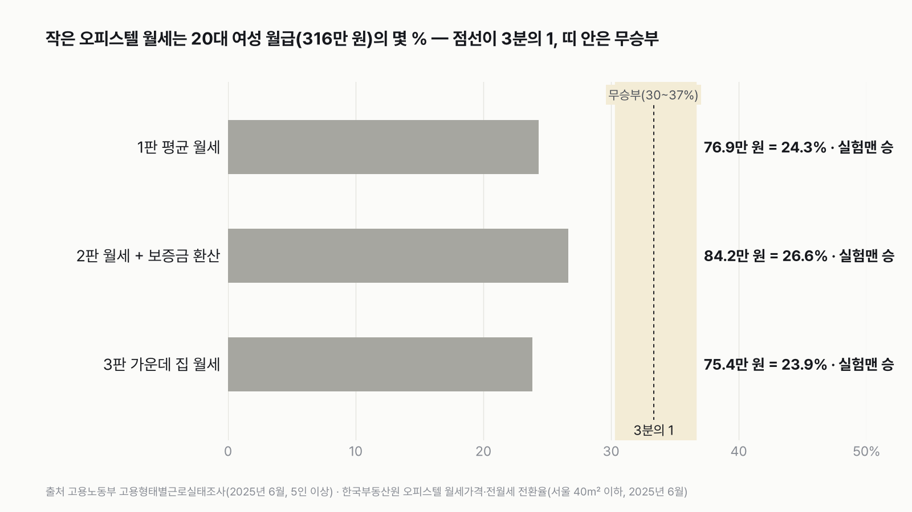
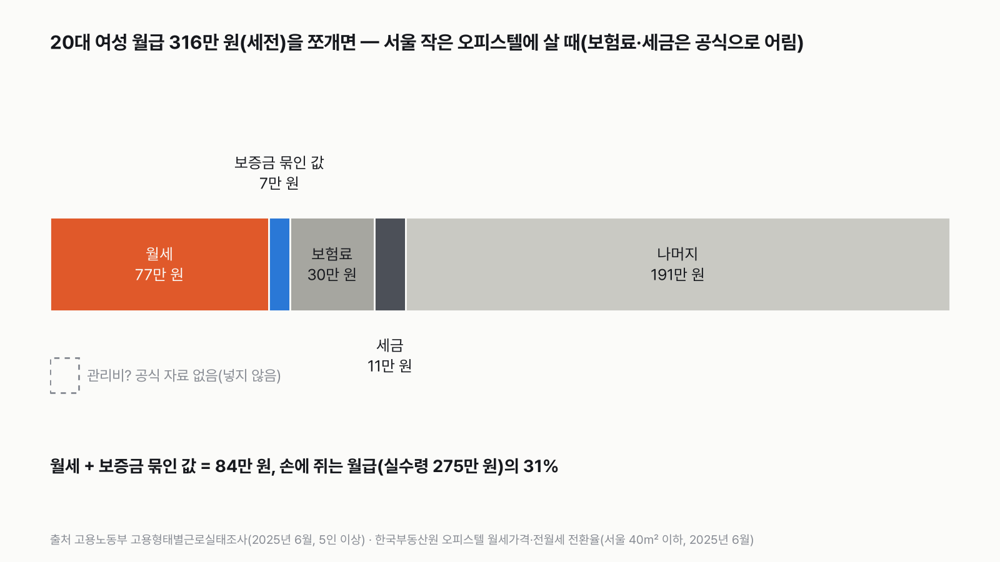
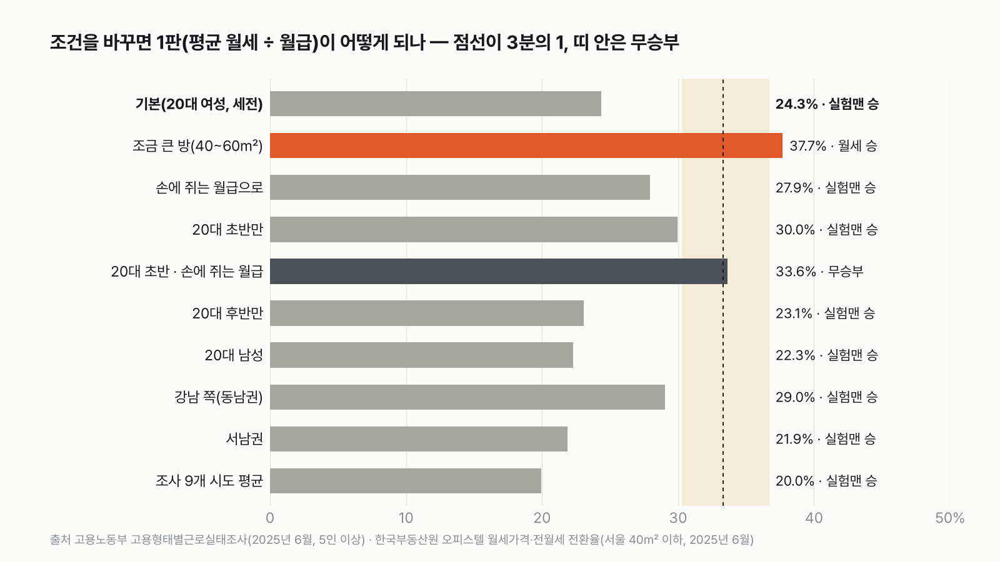
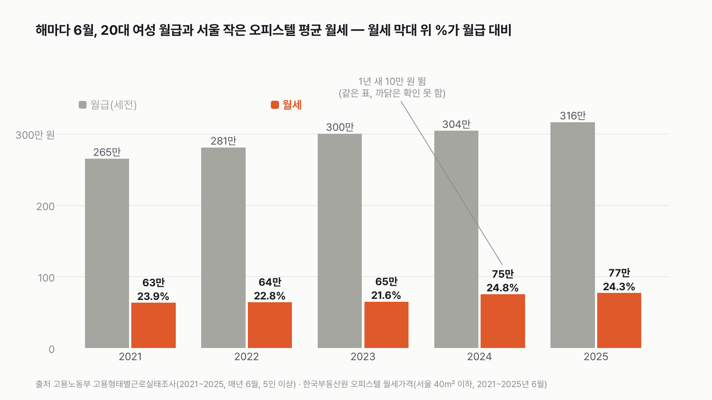

서울에 혼자 사는 20대 여성 실험맨, 작은 오피스텔 월세가 월급의 3분의 1을 넘을까
서울 월세는 비싸다는 말을 매일 들어요. 그런데 20대 여성의 실제 월급과 나란히 놓으면 어디까지 올라올까요?
독자 투표
- 이번 실험맨은 서울에서 혼자 사는 20대 여성이에요. 월급 봉투와 작은 오피스텔 월세 고지서를 나란히 놓아요.
- 흔히 "월세가 월급의 3분의 1을 넘으면 버겁다"고 해요. 서울 작은 오피스텔의 평균 월세는 70만 원대 후반이에요.
- 평균 월세, 보증금까지 넣은 월세, 줄 세웠을 때 가운데 집 월세 세 판으로 겨뤄요.
조건과 규칙
- 이번 실험맨은 서울에서 혼자 사는 20대 여성으로 나섰어요. 같은 계산을 20대 남성으로도 돌려서 같이 놓았어요.
- 월급은 20대 여성 근로자가 한 달에 받는 세전 월급이에요. 해마다 받는 상여금을 12달로 나눠 더했고, 20대 초반과 후반을 사람 수만큼 섞어 평균을 냈어요(고용노동부 2025년 6월 조사).
- 월세는 한국부동산원이 매달 조사하는 서울 오피스텔 월세(전용 40㎡ 이하, 2025년 6월)예요. 원룸·다세대 주택은 월세 금액을 낸 공식 통계가 없어서, 금액이 나오는 오피스텔로 봤어요.
- 1판은 평균 월세, 2판은 평균 월세에 보증금을 월세로 바꾼 값까지 더한 것, 3판은 줄 세웠을 때 가운데 집(중위)의 월세예요.
- 월세 ÷ 월급이 3분의 1보다 1.1배 이상 높으면 월세 승, 1.1배 이상 낮으면 실험맨 승, 그 안이면 무승부예요. 30.3%보다 낮으면 '못 넘는다', 36.7%보다 높으면 '넘는다', 그 사이는 무승부예요.
결과 요약
3판 실험맨 3승 → 최종 실험맨 승(3분의 1 못 넘는다)
- 20대 여성 실험맨의 월급은 316만 원(세전), 서울 작은 오피스텔 평균 월세는 76.9만 원이에요. 월급의 24.3%라서 3분의 1에 한참 못 미쳐요.
- 보증금 1,474만 원을 월세로 바꿔 더해도 84.2만 원, 26.6%예요. 가운데 집 월세는 75.4만 원, 23.9%예요. 세 판 모두 실험맨이 이겨요.
- 그런데 방을 조금 넓히면(40~60㎡) 월세가 119만 원으로 뛰어 37.7%, 월세가 이겨요. 20대 초반이 손에 쥐는 월급으로 재도 월세가 가까스로(1승 2무) 이겨요.
그래서? 월세가 월급의 3분의 1에 닿으려면 작은 방 월세가 105만 원이어야 해요. 지금보다 28만 원 더 비싸야 해요. 다만 방을 40㎡ 넘게 넓히거나, 20대 초반이 손에 쥐는 월급으로 재면 뒤집혀요.
독자 예상 vs 데이터 결과
서울에 혼자 사는 20대 여성 실험맨, 작은 오피스텔 월세가 월급의 3분의 1을 넘을까?
데이터로 보면 3분의 1 못 넘는다. 서울 작은 오피스텔(40㎡ 이하) 평균 월세 76.9만 원은 20대 여성 월급 316만 원의 24.3%예요. 보증금까지 넣어도 26.6%, 가운데 집은 23.9%라 세 판 모두 3분의 1에 못 미쳐요. 방이 40~60㎡로 넓어지면 37.7%로 넘어요.


숫자 두 개로 줄이면 이래요. 실험맨 월급은 316만 원, 작은 오피스텔 평균 월세는 77만 원이에요. 월급 네 장 중 한 장이 조금 안 되게 월세로 나가요.
평균끼리 놓은 값이에요. 실제로 내는 사람은 관리비도 내고 월급이 더 적을 수도 있어요. 저는 서울 월세라면 3분의 1 근처에서 박빙일 줄 알았어요. 평균끼리는 생각보다 여유가 있었어요.
| 판 | 한 달 주거비 | 20대 여성 월급(세전) | 월급 대비 | 승자 |
|---|---|---|---|---|
| 1판 평균 월세 | 76.9만 원 | 316.1만 원 | 24.3% | 실험맨(3분의 1 못 넘음) |
| 2판 월세 + 보증금 환산 | 84.2만 원 | 316.1만 원 | 26.6% | 실험맨(3분의 1 못 넘음) |
| 3판 가운데 집 월세 | 75.4만 원 | 316.1만 원 | 23.9% | 실험맨(3분의 1 못 넘음) |
| 최종 | 실험맨 3승 → 실험맨 승 |
판마다 월세 ÷ 월급을 3분의 1과 비교했어요. 3분의 1보다 1.1배 이상 높으면 월세 승, 1.1배 이상 낮으면 실험맨 승, 그 안이면 무승부예요. 세 판 모두 30.3% 아래라 실험맨이 이겼어요. 가장 가까운 2판도 26.6%로, 무승부 띠까지 3.7%포인트 남아요.
1판 평균 월세: 실험맨 승(24.3%)
서울 오피스텔 가운데 전용 40㎡ 이하 작은 방의 평균 월세는 2025년 6월 76.9만 원이에요. 20대 여성 실험맨의 월급 316.1만 원으로 나누면 24.3%예요. 흔히 말하는 '3분의 1'에는 9%포인트 모자라요.
이 판이 무승부가 되려면 월세가 95.8만 원을 넘어야 하고, 월세가 이기려면 115.9만 원을 넘어야 해요. 딱 3분의 1이 되는 월세는 105.4만 원이에요. 지금 평균보다 28만 원 더 비싼 방이에요.
2판 월세 + 보증금 환산: 실험맨 승(26.6%)
월세방에도 보증금이 있어요. 서울 작은 오피스텔의 평균 보증금은 1,474만 원이에요. 이 돈은 집주인에게 맡겨 두는 동안 다른 데 쓸 수 없으니, 한국부동산원이 내는 전월세 전환율(5.95%)로 월세로 바꿔 더했어요. 한 달에 7.3만 원이에요.
월세 76.9만 원에 7.3만 원을 더하면 84.2만 원, 월급의 26.6%예요. 세 판 가운데 가장 높지만 여전히 무승부 띠(30.3%) 아래예요. 보증금을 은행 정기예금 금리(2.54%)로 바꾸면 한 달 3.1만 원만 더해져 25.3%로 내려가요.
3판 가운데 집 월세: 실험맨 승(23.9%)
평균은 비싼 집 몇 곳이 끌어올릴 수 있어요. 작은 오피스텔을 월세 순서로 줄 세웠을 때 가운데 집은 75.4만 원이에요. 평균과 1.5만 원밖에 차이 나지 않아요. 작은 방 월세는 고르게 몰려 있다는 뜻이에요. 월급의 23.9%로 실험맨이 이겨요.


월급 316만 원은 어디로 가나
세전 월급에서 4대 보험료(약 30만 원)와 소득세·지방소득세(약 11만 원)를 빼면 손에 쥐는 돈은 약 275만 원이에요. 보험료와 세금은 2025년 요율과 세법 공식으로 어림했어요(카드 공제 같은 개인 공제는 넣지 않았어요). 여기서 월세 77만 원만 빼도 198만 원이 남아요. 보증금이 묶여 있는 값(한 달 7만 원)까지 치면 191만 원이에요.
손에 쥐는 월급 기준으로 다시 재면 1판은 27.9%, 2판은 30.6%예요. 2판은 무승부 띠 안으로 들어와요. '월급'을 세전으로 보느냐, 통장에 찍히는 돈으로 보느냐에 따라 체감이 꽤 달라요.


방을 조금만 넓히면 월세가 이겨요
같은 서울 오피스텔이라도 전용 40㎡를 넘어 60㎡ 이하로 가면 평균 월세가 119.1만 원이에요. 작은 방보다 42만 원 비싸요. 월급의 37.7%라서 1판은 월세가 이겨요. 보증금까지 넣은 2판은 41.5%로 월세 승, 가운데 집 3판은 36.1%로 무승부예요. 이 방이면 최종 승자가 월세(2승 1무)로 바뀌어요.
전용 40㎡ 이하를 고르느냐, 40~60㎡를 고르느냐가 판정 자체를 뒤집어요. 면적 한 칸 차이가 월급의 13%포인트예요.
20대 초반이면 선 바로 위에 서요
20대 여성 근로자 가운데 25~29세가 77%라서, 실험맨 월급은 20대 후반 쪽으로 기울어 있어요. 20~24세 여성만 보면 월급이 256.7만 원이에요. 같은 작은 방 월세가 월급의 30.0%로, 무승부 띠 바로 아래예요. 2판은 32.8%로 무승부예요.
20대 초반의 손에 쥐는 월급(228.7만 원)으로 재면 1판 33.6%, 2판 36.8%, 3판 33.0%예요. 2판이 1.1배 선을 겨우 넘어 월세가 이기고, 나머지 두 판은 무승부라 최종 승자가 월세로 바뀌어요. 사회에 막 나온 20대 초반에게는 '3분의 1'이 말 그대로의 현실이에요.
20대 남성과 견주면
같은 표에서 20대 남성 월급은 344.9만 원이에요. 여성보다 29만 원 많아요. 같은 작은 방이면 월급의 22.3%예요. 같은 방에 같은 월세를 내도 여성에게는 2%포인트 더 무거워요. 나이대별로 봐도 20~24세 17.7만 원, 25~29세 26만 원 차이가 나요.
서울 어디냐에 따라
권역별로 보면 강남 3구가 있는 동남권 작은 오피스텔 월세가 91.8만 원으로 가장 비싸요. 월급의 29.0%, 보증금까지 넣으면 30.8%로 무승부 띠에 들어와요. 도심권은 27.1%, 서북권 23.6%, 동북권 22.4%, 서남권 21.9%예요. 수도권 전체로 넓히면 21.5%, 조사 대상 9개 시도 평균이면 20.0%예요. 권역 값은 서울 전체보다 조사한 집이 적어 더 흔들릴 수 있어요.


해마다 6월에 재 보면
같은 표로 2021년부터 해마다 6월 값을 나란히 놓으면 월급 대비 월세는 23.9% → 22.8% → 21.6% → 24.8% → 24.3%예요. 2021~2023년에는 월급이 월세보다 빨리 올라 비율이 내려갔어요. 2024년에는 작은 방 평균 월세가 한 해 만에 64.8만 원에서 75.3만 원으로 뛰었어요. 같은 표 안에서 이렇게 크게 움직인 해는 이때뿐이라, 해마다 비교할 때는 조심해서 봐야 해요.
1년 뒤인 2026년 6월 작은 방 평균 월세는 80.1만 원이에요. 2025년 월급으로 나누면 25.3%예요. 월급이 오르지 않았다고 쳐도 아직 3분의 1과는 거리가 있어요.
3분의 1이 버거운 까닭은 숫자 하나가 아니에요
이번 판정은 평균 월급과 평균 월세의 싸움이에요. 실제로 월세를 내는 사람은 평균보다 월급이 적을 수도, 더 넓은 방에 살 수도 있어요. 관리비·전기·가스 요금은 월세에 들어 있지 않고, 5인 미만 작은 회사에 다니는 사람은 이 임금 통계에 빠져 있어요. 평균이 24%여도 선 근처에 선 사람은 꽤 있을 수 있어요.
다르게 보면
| 바꾼 조건 | 1판 | 2판 | 3판 | 최종 |
|---|---|---|---|---|
| 기본(20대 여성, 세전, 40㎡ 이하) | 24.3% | 26.6% | 23.9% | 실험맨 승 |
| 조금 큰 방(40~60㎡) | 37.7% | 41.5% | 36.1% | 월세 승(2승 1무) |
| 손에 쥐는 월급으로 | 27.9% | 30.6% | 27.4% | 실험맨 승(2승 1무) |
| 20~24세 여성만 | 30.0% | 32.8% | 29.4% | 실험맨 승(2승 1무) |
| 20~24세 여성 · 손에 쥐는 월급 | 33.6% | 36.8% | 33.0% | 월세 승(1승 2무) |
| 25~29세 여성만 | 23.1% | 25.2% | 22.6% | 실험맨 승 |
| 상여금 뺀 세전 월급(294.7만 원) | 26.1% | 28.6% | 25.6% | 실험맨 승 |
| 상여금 뺀 월급 · 손에 쥐는 월급(258.8만 원) | 29.7% | 32.5% | 29.1% | 실험맨 승(2승 1무) |
| 20대 남성 | 22.3% | 24.4% | 21.9% | 실험맨 승 |
| 2판 보증금을 가운데 집 보증금(1,000만 원)으로 | 24.3% | 25.9% | 23.9% | 실험맨 승 |
| 2판 보증금 환산율을 정기예금 금리(2.54%)로 | 24.3% | 25.3% | 23.9% | 실험맨 승 |
| 동남권 | 29.0% | 30.8% | 28.5% | 실험맨 승(2승 1무) |
| 조사 대상 9개 시도 평균 | 20.0% | 21.7% | 19.6% | 실험맨 승 |
| 1년 뒤 월세(2026년 6월) | 25.3% | 27.7% | 24.7% | 실험맨 승 |
뒤집히는 조건은 두 가지예요. 방이 40㎡를 넘어 조금 넓어지거나, 실험맨이 20대 초반이면서 손에 쥐는 월급으로 잴 때예요. 월급 쪽에서 보면 1판이 무승부가 되려면 월급이 253.9만 원 이하, 월세가 이기려면 209.8만 원 이하여야 해요.
관리비는 공식 평균이 없어 뺐어요. 대신 얼마가 붙으면 판정이 바뀌는지는 셀 수 있어요. 세전 월급으로 재면 관리비가 18.9만 원 넘게 붙어야 1판이 무승부, 39.0만 원 넘게 붙어야 월세 승이 돼요. 손에 쥐는 월급(275.4만 원)으로 재면 관리비 6.5만 원만 붙어도 1판이 무승부, 24.1만 원이면 월세 승이에요. 통장 기준으로 재면 선이 생각보다 가까워요.
끝으로
월세에 관리비를 더하고, 통장에 찍히는 월급으로 나눠 보세요. 30%를 넘나요?
이 숫자는 어디서 왔나요
출처
기준일 판정은 2025년 6월 값이에요(임금 조사가 매년 6월 기준). 2026년 6월 월세는 비교로만 썼어요. KOSIS 값은 2026년 11월 9일에 받았어요. 조건은 2026년 11월 9일, 계산하기 전에 정했어요.
고용노동부고용형태별근로실태조사
- 규모,학력,연령계층,성별 임금 및 근로조건KOSIS DT_118N_PAY0004
20대 남녀 월임금총액·월급여액·근로자 수, 2020~2025(매년 6월)
한국부동산원오피스텔가격동향조사
- 월세가격KOSIS DT_08002_06_006A
지역·규모별 평균/중위 월세·보증금, 2021~2026년 6월
- 전월세 전환율KOSIS DT_08002_09_009A
보증금을 월세로 바꾸는 비율, 2025년 6월
한국은행
- 예금은행 수신금리(신규취급액 기준)KOSIS DT_121Y002원본 보기
정기예금 금리, 2025년 6월(다르게 보면)
2025년 법정 요율·소득세법
- 4대 보험 요율·근로소득세 공식
손에 쥐는 월급 어림
어떻게 셌나요
- 월급: 고용형태별근로실태조사 '규모,학력,연령계층,성별 임금 및 근로조건'(KOSIS DT_118N_PAY0004), 2025년 6월, 5인 이상 전규모·전학력·여자. 20~24세 월임금총액 256.7만 원(근로자 19.6만 명), 25~29세 333.7만 원(66.1만 명)을 근로자 수로 가중평균해 316.1만 원. 월임금총액은 정액급여 + 초과급여 + 전년도 연간특별급여 ÷ 12예요.
- 월세: 한국부동산원 오피스텔가격동향조사 '월세가격'(KOSIS DT_08002_06_006A), 서울·40㎡ 이하, 2025년 6월. 평균월세 76.9만 원, 평균보증금 1,473.7만 원, 중위월세 75.4만 원, 중위보증금 1,000만 원(원자료 단위 천원).
- 보증금 환산: 같은 조사의 '전월세 전환율'(KOSIS DT_08002_09_009A), 서울·40㎡ 이하, 2025년 6월 5.948%. 1,473.7만 × 5.948% ÷ 12 = 7.30만 원.
- 손에 쥐는 월급(어림): 국민연금 4.5%, 건강보험 3.545%, 장기요양 건강보험료의 12.95%, 고용보험 0.9%를 빼고, 소득세는 2025년 근로소득공제·인적공제(본인 150만 원)·보험료공제·세율·근로소득세액공제·표준세액공제(13만 원)로 1년 값을 계산한 뒤 지방소득세 10%를 더했어요. 20대 여성 316.1만 원 → 보험료 29.7만, 세금 11.0만, 손에 쥐는 돈 275.4만 원(87.1%).
- 정기예금 금리: 한국은행 예금은행 수신금리(신규취급액, KOSIS DT_121Y002) 정기예금 2025년 6월 2.54%.
- 판정: 비율 ÷ (1/3)이 1.1 이상이면 월세 승, 1/1.1 이하면 실험맨 승, 그 사이(30.3~36.7%)면 무승부. 세 판 승수로 최종.
한계 9가지
이 데이터로 말할 수 없는 것
- 성별·나이·지역을 한꺼번에 나눈 공식 임금 표가 없어서, 전국 20대 여성 월급을 '서울에 사는 20대 여성' 월급으로 썼어요. 서울 임금이 전국보다 높다면 비율은 더 내려가니 판정은 그대로예요.
- 실험맨에게 유리한 쪽으로 기운 것도 있어요. 월급이 세전이고, 상여금을 12달로 나눠 더했고(빼면 294.7만 원, 1판 26.1%), 5인 이상 사업체만 셌어요. 상여금을 빼고 손에 쥐는 월급(258.8만 원)으로 재도 실험맨 2승 1무로 판정은 같아요.
- 3판은 가운데 집 월세를 평균 월급으로 나눴어요. 줄 세웠을 때 가운데 사람의 월급은 평균보다 낮을 수 있어요.
- 임금 통계는 5인 이상 사업체 근로자만 세요. 작은 가게·자영업·아르바이트로 버는 20대는 빠져 있고, 일하지 않는 20대도 빠져 있어요.
- 월세는 오피스텔만이에요. 다세대·원룸 주택 월세의 평균 금액은 공식 통계로 나와 있지 않아(지수만 있음) 넣지 못했어요. 관리비·공과금도 빠져 있어요.
- 임금 표에는 혼자 사는지 여부가 없어요. 혼자 사는 20대 여성의 월급이 평균과 다를 수 있어요.
- 2024년에 작은 방 평균 월세와 보증금이 한 해 만에 크게 뛰었어요. 해마다 비교는 조심해서 봐야 해요.
- 손에 쥐는 월급은 공식으로 어림한 값이라 개인 공제에 따라 달라져요.
- 관리비 공식 평균은 없어요. 판정이 바뀌는 관리비 경계만 '다르게 보면'에 적었어요.
다음 대결
대결 다 보기판다 vs 실험맨
판다 vs 실험맨, 다섯 판 승부로 하루에 '더 많이 먹는' 쪽은?
A판다vsB실험맨
투표하러 가기
대결실험맨투표했어요결과: 산다배달·외식비 vs 스마트폰
실험맨이 1년 동안 사 먹는 밥값(배달 포함)으로 최신 스마트폰을 살 수 있을까?
A산다vsB못 산다
투표하러 가기
대결실험맨투표했어요65세 이상 남성 승20대 여성 vs 65세 이상 남성
20대 여성 실험맨 vs 65세 이상 남성 실험맨, 네 판 승부로 하루 운동을 더 많이 하는 쪽은?
A20대 여성vsB65세 이상 남성
투표하러 가기
대결투표했어요짜장면 승짜장면 vs 치킨
짜장면 vs 치킨, 다섯 판 승부로 값이 더 많이 오른 국민 음식은?
A짜장면vsB치킨
투표하러 가기
대결실험맨투표했어요출퇴근 승출퇴근 vs 연차
실험맨이 1년 동안 출퇴근에 쓰는 시간과 연차 휴가로 쉬는 시간, 세 판 승부로 더 긴 쪽은?
A출퇴근vsB연차 휴가
투표하러 가기
대결투표했어요경복궁 승경복궁 vs 에버랜드
경복궁 vs 에버랜드, 다섯 판 승부로 1년에 사람이 더 많이 찾는 곳은?
A경복궁vsB에버랜드
투표하러 가기
대결투표했어요결과: 세계기록 사람마라톤 세계기록 vs 서울 버스
마라톤 세계기록 속도로 뛰는 사람 vs 서울 시내버스, 세 판 승부로 더 빠른 쪽은?
A세계기록 사람vsB서울 버스
투표하러 가기
대결실험맨투표했어요무승부실험맨 vs 수영장
실험맨 혼자 1년 쓴 수돗물로 25m 수영장 레인 한 줄을 채울 수 있을까?
A채운다vsB못 채운다
투표하러 가기
새 글 나오면 받아 보기
피드 리더 앱에 이 사이트 주소를 한 번 넣어 두면, 새 글이 올라올 때 앱에 떠요. 가입이나 메일 주소는 필요 없어요.
받는 법 보기
- 피드 리더 앱을 하나 골라요. 새 글을 모아 보여 주는 앱이에요. 예를 들면 Feedly나 Inoreader가 있어요. 둘 다 무료고 웹·휴대폰에서 써요.
- 앱에서 '구독 추가'(+)를 누르고 아래 주소를 붙여 넣어요.
- 끝이에요. 새 글이 올라오면 앱 목록에 떠요.
https://protofu.github.io/opendata-insight/feed.xmlFeedly를 쓴다면 여기를 눌러 바로 추가할 수도 있어요.